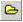
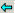

key and start typing in Script Editor and select it from the list.
key and start typing in Script Editor and select it from the list.Ensure that the Adroit Script Editor window is displayed.
Tip: Alternatively select the Open file

toolbar button or press CTRL-O, the shortcut key for this command.This will display the Select file to open dialog.
Then double click on the folder icons in the explorer view to navigate to the required source folder, if necessary use the Up One Level button to move to the folder one level up in the hierarchy, it is also possible to Go To Last Folder Visited using this

button.Note: It is possible to change the way this explorer view is formatted, as in Windows Explorer by using the View Menu button, this allows the following views: Thumbnails, Icons, Tiles, List or Details